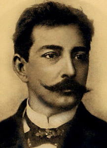

Nascimento: 14 de abril de 1857, São Luís, Maranhão
Falecimento: 21 de janeiro de 1913, La Plata, Argentina
Filhos: Pastor Azevedo Luquez, Zulema Luquez
Pais: Emília Amália Pinto de Magalhães, David Gonçalves de Azevedo
Irmãos: Artur de Azevedo
Aluísio Azevedo, caricaturista, jornalista, romancista e diplomata, nasceu em São Luís, MA, em 14 de abril de 1857, e faleceu em Buenos Aires, Argentina, em 21 de janeiro de 1913. Era filho do vice-cônsul português David Gonçalves de Azevedo e de D. Emília Amália Pinto de Magalhães e irmão mais moço do comediógrafo Artur Azevedo. Sua mãe havia casado, aos 17 anos, com um comerciante português. O temperamento brutal do marido determinou o fim do casamento. Emília refugiou-se em casa de amigos, até conhecer o vice-cônsul de Portugal, o jovem viúvo David. Os dois passaram a viver juntos, sem contraírem segundas núpcias, o que à época foi considerado um escândalo na sociedade maranhense. Da infância à adolescência, Aluísio estudou em São Luís e trabalhou como caixeiro e guarda-livros. Desde cedo revelou grande interesse pelo desenho e pela pintura, o que certamente o auxiliou na aquisição da técnica que empregará mais tarde ao caracterizar os personagens de seus romances. Em 1876, embarcou para o Rio de Janeiro, onde já se encontrava o irmão mais velho, Artur. Matriculou-se na Imperial Academia de Belas Artes, hoje Escola Nacional de Belas Artes. Para manter-se fazia caricaturas para os jornais da época, como O Fígaro, O Mequetrefe, Zig-Zag e A Semana Ilustrada. A partir desses “bonecos”, que conservava sobre a mesa de trabalho, escrevia cenas de romances.
Com a morte do pai, em 1879, Aluísio volta para São Luís e começa a carreira literária para ganhar a vida. Publica seu primeiro "Romance Romântico", Uma Lágrima de Mulher (1879), onde se mostra exageradamente sentimental para satisfazer um público ávido pelo romantismo. Em 1881, publica O Mulato, romance que iniciou o “Movimento Naturalista no Brasil”. A obra denunciava o preconceito racial existente na burguesia maranhense e provocou uma reação indignada da sociedade, que se viu retratada nos personagens, mas o livro foi um sucesso de vendas. No dia 7 de setembro de 1881, Aluísio Azevedo volta para o Rio de Janeiro decidido a se dedicar à vida de escritor. Publicou inúmeros contos, crônicas, romances e peças de teatro, nos folhetos dos jornais da época, na maioria obras de feição romântica, cujos enredos conduziam ora a tragédia ora ao desenlace feliz, entre eles: Memórias de Um Infeliz (1882) e Mistério da Tijuca (1882). Durante os intervalos da sua intensa produção literária, Aluísio Azevedo procurava escrever livros sérios e mais trabalhados. Surgem suas obras mais importantes, que pertencem à fase “Naturalista” do escritor, entre elas: O Homem, Livro de Uma Sogra, O Cortiço e Casa de Pensão. Preocupado com a realidade cotidiana, seus temas prediletos foram: a luta contra o preconceito de cor, o adultério, os vícios e o povo humilde. Na obra O Cortiço, Aluísio retrata o aumento da população no Rio de Janeiro e o aparecimento de núcleos habitacionais, denominados cortiços, onde se aglomeravam trabalhadores e gente de atividades incertas. O grande personagem do romance é o próprio cortiço.